MAPAS
Abyss
Situado em um desfiladeiro misterioso, o mapa desafia os jogadores com quedas mortais e caminhos alternativos estratégicos. Sem barreiras nas bordas, qualquer deslize pode ser fatal, tornando o posicionamento e o movimento ainda mais cruciais. Com novas mecânicas e possibilidades táticas, Abyss adiciona um dinamismo inédito ao gameplay de Valorant, exigindo criatividade e precisão dos agentes.
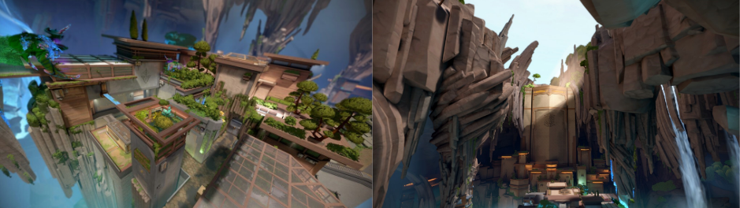
Ascent
O mapa Ascent de Valorant é ambientado em uma cidade inspirada em Veneza, na Itália, trazendo um estilo clássico com canais e arquitetura europeia. Com um layout simétrico e um grande pátio central, Ascent oferece diversas possibilidades estratégicas, incluindo portas mecânicas que podem ser fechadas para bloquear rotas. Seu design favorece tanto confrontos de longo alcance quanto emboscadas em espaços fechados, tornando-o um dos mapas mais equilibrados e táticos do jogo.
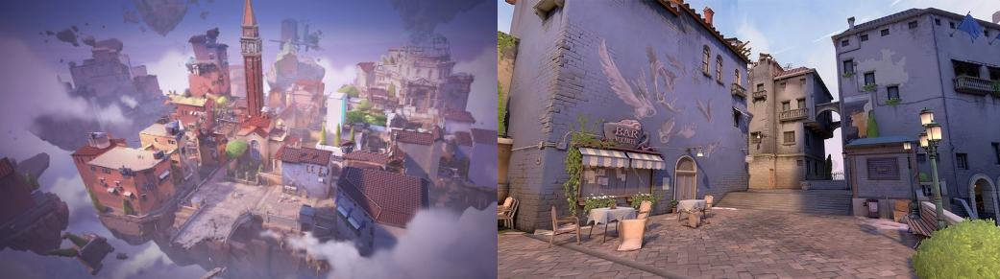
Bind
O mapa Bind de Valorant se destaca por sua ausência de uma área central, forçando os jogadores a escolherem entre dois sites conectados por teleportadores unidirecionais. Situado em um deserto inspirado no Oriente Médio, Bind possui corredores estreitos e espaços abertos que favorecem tanto jogadas agressivas quanto estratégias defensivas. Os teleportadores criam oportunidades únicas para rotações rápidas e emboscadas, tornando o mapa dinâmico e imprevisível em cada rodada.
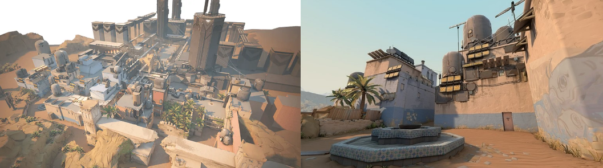
Breeze
O mapa Breeze de Valorant é conhecido por seus espaços abertos e longas linhas de visão, tornando-o ideal para agentes que dominam combates à distância. Situado em uma ilha tropical paradisíaca, Breeze apresenta áreas amplas, como o meio exposto e os bombsites espaçosos, que incentivam jogadas criativas e posicionamento estratégico. Com múltiplos acessos aos sites e um design que favorece tanto atiradores quanto duelistas, o mapa exige controle de território e boa comunicação para dominar as trocas de tiro.
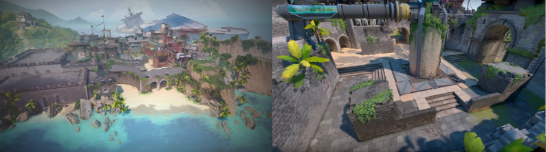
Fracture
O mapa Fracture de Valorant possui um design inovador, onde os atacantes começam cercando os defensores, que precisam escolher bem suas posições. Dividido por uma grande rachadura no meio, Fracture oferece múltiplas rotas e opções estratégicas, favorecendo jogadas rápidas e imprevisíveis. Além disso, seu sistema de cordas interligadas permite rotações ágeis entre os lados do mapa. Essa estrutura única exige coordenação e adaptação constante, tornando Fracture um dos mapas mais dinâmicos e desafiadores do jogo.
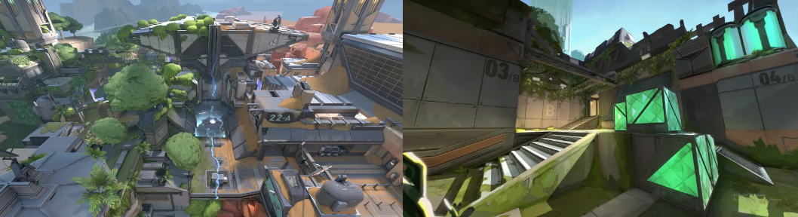
Haven
O mapa Haven de Valorant é único por possuir três bombsites (A, B e C), ao invés dos tradicionais dois, o que exige uma defesa mais distribuída e estratégias de rotação eficientes. Ambientado em um mosteiro no Nepal, Haven combina áreas abertas e corredores estreitos, favorecendo tanto confrontos diretos quanto jogadas táticas. O design do mapa incentiva ataques variados e requer uma comunicação precisa para controlar os múltiplos pontos de entrada, tornando-o um dos mais estratégicos do jogo.
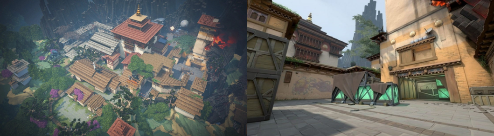
Icebox
O mapa Icebox de Valorant é ambientado em uma instalação congelada no Ártico, oferecendo um design vertical e cheio de estruturas metálicas e contêineres. Com cordas e diversas coberturas, Icebox favorece jogadas ágeis e combates intensos em múltiplos níveis. O bombsite B possui uma icônica plataforma elevada, exigindo controle estratégico, enquanto o bombsite A oferece vários ângulos de ataque e defesa. Sua complexidade e variedade de posições tornam o mapa um dos mais desafiadores e táticos do jogo
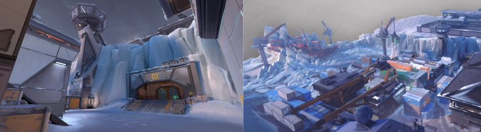
Lotus
O mapa Lotus de Valorant é ambientado em um antigo templo perdido, cercado por uma floresta misteriosa. Com três bombsites (A, B e C), ele oferece múltiplas possibilidades estratégicas e exige rotação eficiente. Sua principal característica são as portas giratórias, que criam novas rotas e desafiam o controle do mapa. Com áreas abertas e corredores estreitos, Lotus favorece tanto jogadas táticas quanto combates intensos, tornando cada rodada imprevisível e dinâmica.
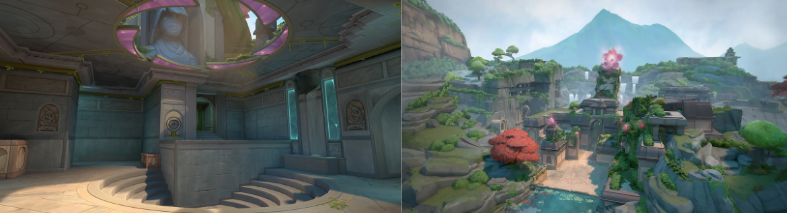
Pearl
O mapa Pearl de Valorant é ambientado em uma cidade subaquática futurista inspirada em Lisboa, Portugal. Diferente de outros mapas, Pearl não possui mecânicas interativas, focando em um design mais tradicional, com corredores estreitos e áreas abertas que favorecem duelos táticos e controle de território. Seu meio amplo é um ponto crucial para dominar a partida, permitindo rotações estratégicas entre os bombsites A e B. Com um visual vibrante e detalhado, Pearl oferece um estilo clássico de gameplay, equilibrando bem ataque e defesa.
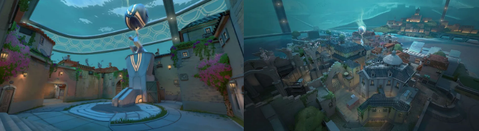
Sunset
O mapa Sunset de Valorant é inspirado em Los Angeles, Califórnia, trazendo uma ambientação urbana vibrante com grafites e ruas estreitas. Seu design é equilibrado, com dois bombsites (A e B) e um meio essencial para controle do mapa, favorecendo confrontos dinâmicos. Sunset se destaca pelo uso estratégico de coberturas e espaços reduzidos, exigindo boa coordenação para dominar as rotas. Com um estilo clássico e tático, o mapa proporciona uma experiência equilibrada entre ataque e defesa.
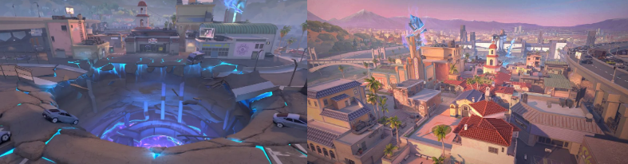
Split
O mapa Split de Valorant é caracterizado por seus elevados e áreas fechadas, favorecendo jogadas verticais e o uso de agentes com mobilidade. Ambientado em um centro urbano futurista no Japão, Split possui dois bombsites (A e B) conectados por um meio estreito e disputado, crucial para o controle do mapa. Suas cordas verticais permitem rotações rápidas, enquanto as passagens apertadas favorecem táticas defensivas. Com um design focado em emboscadas e posicionamento, Split exige precisão e estratégia para dominar as partidas.
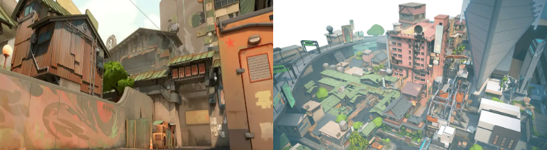